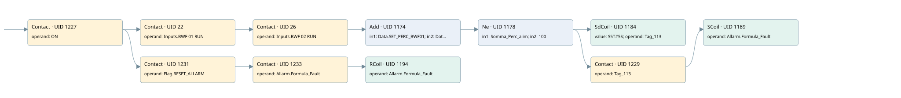

incorrect scraps feeder formula
allarms 3 · 검색 색인 순서 15 · 원본 내부 NID 추정 15
백업 PLF 원본의 3181557 바이트 위치에서 복원한 XML. 검색 문서 1993의 객체 키 161022007f6b000000000000와 연결했다. 이름 해석 15/15개. 남은 RefId는 상수 또는 미해석 참조다.
연결 구조 다시 그리기
원본 Part/PCon/Wire를 이용한 연결도다. TIA 화면의 래더 배치 또는 실행 결과를 재현한 그림은 아니다. 핀 연결은 아래 표와 원본 XML을 기준으로 읽는다. 노드 위에 마우스를 두면 피연산자 이름을 볼 수 있다.

접점·코일·블록과 피연산자
| Part UID | Gate | Negated 핀 | 연결 피연산자 |
|---|---|---|---|
| 1227 | Contact | operand = ON | |
| 22 | Contact | operand = Inputs.BWF 01 RUN | |
| 26 | Contact | operand = Inputs.BWF 02 RUN | |
| 1174 | Add | in1 = Data.SET_PERC_BWF01; in2 = Data.SET_PERC_BWF02; out = Somma_Perc_alim | |
| 1178 | Ne | in1 = Somma_Perc_alim; in2 = 100 | |
| 1184 | SdCoil | value = S5T#5S; operand = Tag_113 | |
| 1229 | Contact | operand = Tag_113 | |
| 1189 | SCoil | operand = Allarm.Formula_Fault | |
| 1231 | Contact | operand = Flag.RESET_ALLARM | |
| 1233 | Contact | operand = Allarm.Formula_Fault | |
| 1194 | RCoil | operand = Allarm.Formula_Fault |
접점 경로를 펼친 조건식
Contact·O/A·비교기의 원본 연결을 읽기 쉽게 펼친 보조 해석이다. POWER는 전원 레일 시작을 뜻한다. 호출 블록·에지·타이머의 내부 동작과 다중 쓰기 순서는 이 표로 실행 검증하지 않았다. 미해석 핀과 RefId는 원문 연결표에서 확인한다.
| UID | 동작 | 대상 | 원본 접점 경로 | 내용 |
|---|---|---|---|---|
| 1184 | SdCoil | Tag_113 | (Add UID 1174.eno (블록 동작 확인) AND [Somma_Perc_alim != 100]) | 시간 동작 SdCoil; 타이머 의미 추가 확인 / 시간 인자 S5T#5S |
| 1189 | SCoil | Allarm.Formula_Fault | ((Add UID 1174.eno (블록 동작 확인) AND [Somma_Perc_alim != 100]) AND Tag_113) | 조건 성립 시 Set |
| 1194 | RCoil | Allarm.Formula_Fault | ((ON AND Flag.RESET_ALLARM) AND Allarm.Formula_Fault) | 조건 성립 시 Reset |
원본 배선 연결
| Wire UID | 동일 Wire 연결 끝점 |
|---|---|
| 1235 | Powerrail {} ↔ Part 1227.in |
| 1208 | ORef 1195 (ON) ↔ Part 1227.operand |
| 1228 | Part 1227.out ↔ Part 22.in ↔ Part 1231.in |
| 21 | ORef 23 (Inputs.BWF 01 RUN) ↔ Part 22.operand |
| 24 | Part 22.out ↔ Part 26.in |
| 25 | ORef 27 (Inputs.BWF 02 RUN) ↔ Part 26.operand |
| 28 | Part 26.out ↔ Part 1174.en |
| 1209 | ORef 1196 (Data.SET_PERC_BWF01) ↔ Part 1174.in1 |
| 1210 | ORef 1197 (Data.SET_PERC_BWF02) ↔ Part 1174.in2 |
| 1212 | Part 1174.eno ↔ Part 1178.pre |
| 1211 | Part 1174.out ↔ ORef 1198 (Somma_Perc_alim) |
| 1213 | ORef 1199 (Somma_Perc_alim) ↔ Part 1178.in1 |
| 1214 | ORef 1200 (100) ↔ Part 1178.in2 |
| 1215 | Part 1178.out ↔ Part 1184.in ↔ Part 1229.in |
| 1216 | ORef 1201 (S5T#5S) ↔ Part 1184.value |
| 1217 | ORef 1202 (Tag_113) ↔ Part 1184.operand |
| 1218 | ORef 1203 (Tag_113) ↔ Part 1229.operand |
| 1230 | Part 1229.out ↔ Part 1189.in |
| 1220 | ORef 1204 (Allarm.Formula_Fault) ↔ Part 1189.operand |
| 1222 | ORef 1205 (Flag.RESET_ALLARM) ↔ Part 1231.operand |
| 1232 | Part 1231.out ↔ Part 1233.in |
| 1223 | ORef 1206 (Allarm.Formula_Fault) ↔ Part 1233.operand |
| 1234 | Part 1233.out ↔ Part 1194.in |
| 1225 | ORef 1207 (Allarm.Formula_Fault) ↔ Part 1194.operand |
식별자 해석 근거 15개
| ORef UID | RefId | 이름 | IdentXmlPart 파일 | 해석 방법 |
|---|---|---|---|---|
| 1195 | 1 | ON | 0686-IdentXmlPart.xml | UID/RID + search-text + NID agreement |
| 23 | 136 | Inputs.BWF 01 RUN | 0684-IdentXmlPart.xml | UID/RID + search-text + NID agreement |
| 27 | 137 | Inputs.BWF 02 RUN | 0684-IdentXmlPart.xml | UID/RID + search-text + NID agreement |
| 1196 | 122 | Data.SET_PERC_BWF01 | 0684-IdentXmlPart.xml | UID/RID + search-text + NID agreement |
| 1197 | 123 | Data.SET_PERC_BWF02 | 0684-IdentXmlPart.xml | UID/RID + search-text + NID agreement |
| 1198 | 124 | Somma_Perc_alim | 0685-IdentXmlPart.xml | UID/RID + search-text + NID agreement |
| 1199 | 124 | Somma_Perc_alim | 0685-IdentXmlPart.xml | UID/RID + search-text + NID agreement |
| 1200 | 125 | 100 | 0683-IdentXmlPart.xml | literal candidate: UID/RID/NID + nearby named declarations + search-text agreement |
| 1202 | 127 | Tag_113 | 0686-IdentXmlPart.xml | UID/RID + search-text + NID agreement |
| 1201 | 175 | S5T#5S | 0683-IdentXmlPart.xml | literal candidate: UID/RID/NID + nearby named declarations + search-text agreement |
| 1203 | 127 | Tag_113 | 0686-IdentXmlPart.xml | UID/RID + search-text + NID agreement |
| 1204 | 128 | Allarm.Formula_Fault | 0684-IdentXmlPart.xml | UID/RID + search-text + NID agreement |
| 1205 | 24 | Flag.RESET_ALLARM | 0684-IdentXmlPart.xml | UID/RID + search-text + NID agreement |
| 1206 | 128 | Allarm.Formula_Fault | 0684-IdentXmlPart.xml | UID/RID + search-text + NID agreement |
| 1207 | 128 | Allarm.Formula_Fault | 0684-IdentXmlPart.xml | UID/RID + search-text + NID agreement |
검색 코드 보조 자료
참조 명칭을 찾기 위한 자료이며 실행 순서나 AND/OR 관계는 위 연결표로 확인한다.
"on" "inputs"."bwf 01 run" "inputs"."bwf 02 run" add "data".set_perc_bwf01 "data".set_perc_bwf02 #somma_perc_alim 100 "tag_113" s5t#5s "flag".reset_allarm "allarm".formula_fault "allarm".formula_fault #somma_perc_alim "tag_113" "allarm".formula_fault